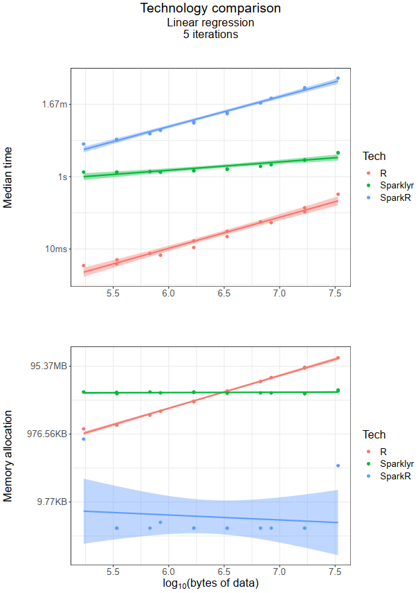

Apache Spark is lightning fast and has become the go-to technology for large-scale data analyses. It provides support for multiple programming languages such as R, Python, Java and Scala. Compared to R, Spark is amazingly fast in loading and handling large datasets (~40 million observations with 14 variables), but there are only a handful of blogs benchmarking Spark and R with real world examples (I found a few here, here and here). None of these address the benchmarking in R from a machine learning point of view, and this blog attempts to do that.
I previously simulated ~40 million observations using Python (I will write a post about it soon). For this exercise, I took 1% of this simulated dataset (~400,000 observations with 14 variables). To increase the dimensionality of the dataset, I replicated the variables twice, giving a final dataset of ~400,000 observations with 42 variables (including a response variable, ‘y’). All observations were numeric. The analysis was carried out in RStudio v1.2.5001.
The makers of Apache Spark have their own R API called SparkR. A quick glance at Spark’s official Machine Learning documentation (MLlib) will tell you that few algorithms are not supported in SparkR. This is where the makers of RStudio come in, with their own R API called sparklyr. sparklyr bridges some of the gaps (you can read more about it here and here). In this post, I benchmarked two machine learning algorithms, random forest (RF) and linear regression (LR), on R, SparkR and sparklyr. For both algorithms (RF and LR), the aim was to predict the values of y.
I used the bench package which comes with a useful function called press. I won’t go into detail, as it is better to show with a sample code below (benchmarking RF and LR in R) -
resultR <- bench::press(
rows = c(1000, 2000, 5000, 10000, 20000, 50000, 100000, 200000, nrows),
cols = c(ncols/2, ncols),
{
dat <- test[1:rows, 1:cols]
bench::mark(iterations = 5, check = FALSE, min_time = Inf,
rfR = randomForest(y ~ . , data = dat, ntree = 20),
lmR = lm(y ~ . , data = dat)
)
}
)One can think of press as two nested for loops, one for rows and one for cols. The benchmarking was done over 5 iterations for each algorithm. Algorithm parameters were kept the same for a fair comparison.
I will break down the results for each algorithm separately, as results are quite different. The focus was on running time and memory used as the size of the data increases.
Short story
R performs better with a smaller dataset (~100kb). For a larger dataset, sparklyr takes over.sparklyr is still better (as most modern laptops/desktops can accommodate ~100Mb of memory).
Short story:
R performed better irrespective of data size (although for a dataset larger than the one used in this blog, sparklyr is likely to become faster than R).SparkR beats R and sparklyr (again!).
This blog touched the surface of benchmarking 3 technologies (R, SparkR and sparklyr). It highlighted the advantages and disadvantages of these technologies in the context of machine learning algorithms and size of the data. When considering which technology to use for your analysis, it is wise to benchmark the algorithm(s) you would be deploying.
The following are the R packages and system info -
R version 3.6.0 (2019-04-26)
Platform: x86_64-w64-mingw32/x64 (64-bit)
Running under: Windows Server >= 2012 x64 (build 9200)
Matrix products: default
locale:
[1] LC_COLLATE=English_United States.1252 LC_CTYPE=English_United States.1252 LC_MONETARY=English_United States.1252 LC_NUMERIC=C LC_TIME=English_United States.1252
attached base packages:
[1] grid stats graphics grDevices utils datasets methods base
other attached packages:
[1] SparkR_2.3.2 sparklyr_1.0.2 randomForest_4.6-14 ggplot2_3.2.1 bench_1.0.4 dplyr_0.8.3
loaded via a namespace (and not attached):
[1] Rcpp_1.0.2 dbplyr_1.4.2 pillar_1.4.2 compiler_3.6.0 r2d3_0.2.3 base64enc_0.1-3 tools_3.6.0 digest_0.6.20 jsonlite_1.6 tibble_2.1.3 gtable_0.3.0 pkgconfig_2.0.2 rlang_0.4.0
[14] DBI_1.0.0 rstudioapi_0.10 yaml_2.2.0 withr_2.1.2 httr_1.4.1 generics_0.0.2 htmlwidgets_1.3 rprojroot_1.3-2 tidyselect_0.2.5 glue_1.3.1 forge_0.2.0 R6_2.4.0 purrr_0.3.2
[27] magrittr_1.5 ellipsis_0.2.0.1 scales_1.0.0 backports_1.1.4 htmltools_0.3.6 assertthat_0.2.1 colorspace_1.4-1 lazyeval_0.2.2 munsell_0.5.0 crayon_1.3.4